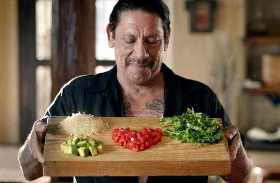
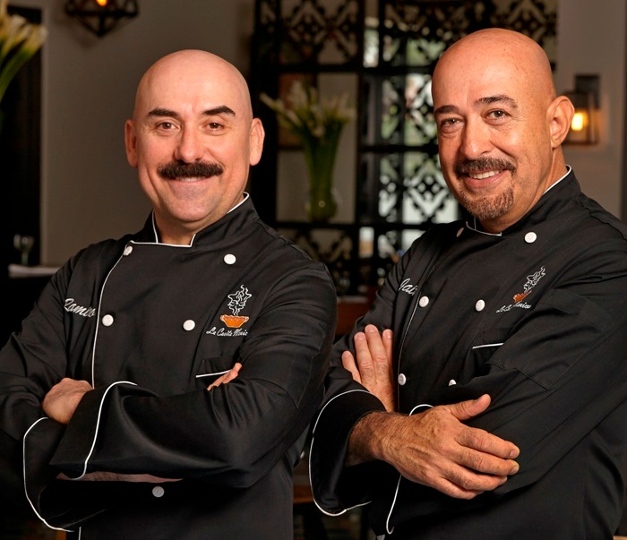
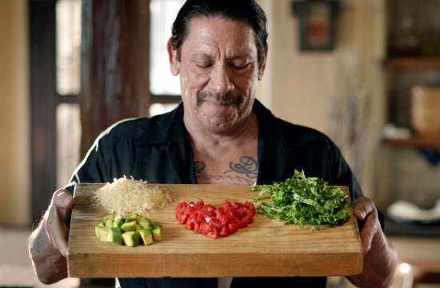
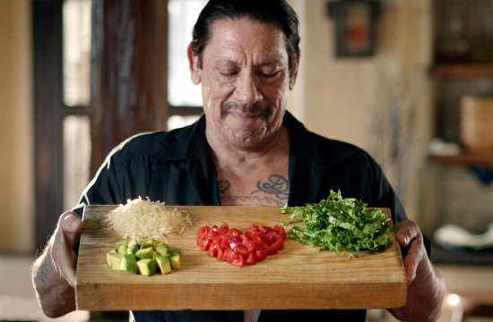

Mon cousin, Kawa Kuku Càmisa Ñegrà, et moi-même, Gustavo Kiki Càmisa Ñegrà, sommes les dignes héritiers de notre grand-père. Le grand Gonzaló Ràmirez Henrique Càmisa Ñegrà. L'ultime seigneur des pubs Old El Paso.


Mon cousin, ici à gauche de la photo, est directement issue de l'Institut Paul Bocuse à Lyon. Personnellement, à droite de la photo, je sors tout droit de l'école Ferrandi surnomée "Le Harvard de la Gastronomie"
 
